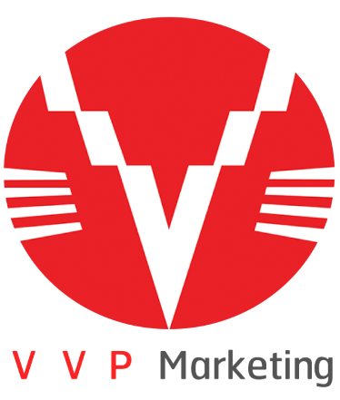

Os VVPs são a nova fronteira do conhecimento digital — uma forma revolucionária de criar, distribuir e consumir conteúdo de alto valor em formato condensado, exclusivo e prático. VVP tem dois significados, refletindo a força e o propósito da nossa plataforma para dois públicos essenciais: Para os produtores (Oferta): Vídeo de Vendas Privado Um produto digital exclusivo, protegido e criado para quem quer oferecer conteúdos de alto valor, com total controle e segurança. É o formato ideal para criadores que desejam transformar seus e-books, cursos extensos e materiais densos em vídeos condensados, objetivos e altamente aplicáveis — entregues de forma privada, para um público seleto que valoriza o conteúdo. Para os consumidores (Demanda): Vídeo de Valor Prático Para quem busca aprendizado rápido, direto e que gera resultados reais, o VVP é o conteúdo essencial, sem enrolação ou perda de tempo. São vídeos criados para entregar o máximo de valor em pouco tempo, condensando a essência do conhecimento para transformar a forma de aprender, aplicar e evoluir. Na nossa plataforma, o VVP é muito mais do que um vídeo: é um produto de transformação, resultado de um trabalho profundo e dedicado, pensado para atender às necessidades reais dos produtores e consumidores que buscam eficiência e qualidade. Aqui, o conhecimento vira ação — e a ação gera sucesso.
